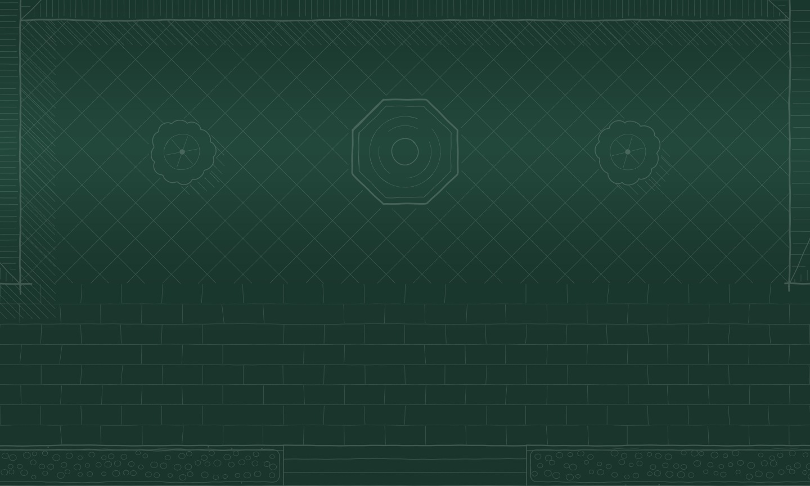
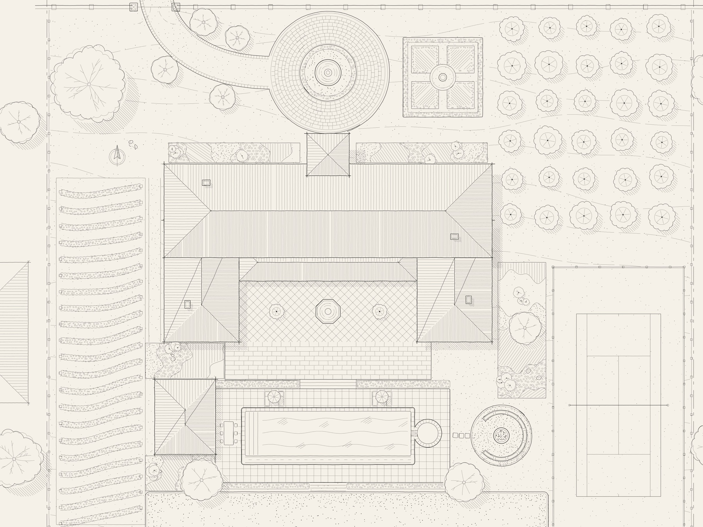

The same hand-inked style, scaled up to a whole estate of about an acre and a half, with no wording. A gated drive lined with olives leads to a cobbled motor court and fountain. The Spanish hacienda is drawn as a tile roof plan around a courtyard. Behind it sit a stone terrace, a vanishing-edge pool and spa, a cabana, a fire terrace and the great lawn. Around them: a formal parterre, a citrus orchard, a vineyard on the contour, a tennis court, an old oak, and the neighbours at the lot lines.
#1E3E33. The fade is
only a suggestion; the master file is unfaded.

A 12,000 × 9,000 px transparent PNG is in the client folder,
02 Clients/san-diego-landscape-remodeling/Vehicle/siteplan-artwork/2026-11-20-rancho-santa-fe-estate/.
| Artboard | 150 × 112.5 in (4:3) at 100% (10,800 × 8,100 pt). Vector, so it scales to any panel or print. |
| Drawing scale | 1 ft = 0.5 in, about 300 × 225 ft of estate in frame. Pen marks are drawn at the same paper size as the backyard pieces, so all three share one hand. |
| Illustrator file | 16 named layers (roofs, drive & motor court, vineyard, tennis court, meadow & contours…), lines grouped by pen weight. Every path uses one global swatch, SDLR plan ink: change it once to recolour the whole plan. A hidden, non-printing body-green layer is there for previewing. |
| Line weights | 1.4 to 5.8 pt strokes. When scaling in Illustrator, keep Scale Strokes & Effects on. |
| Wording | None. |
Version 3 (Rancho Santa Fe estate) · November 20, 2026.